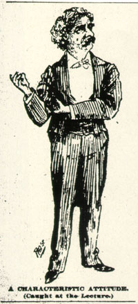
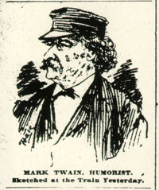

Favorite Encounter with an Interviewer[In his journal of the tour, Pond talked about how a "young reporter" met MT at the train station, "had probably five minutes' talk with him," and wrote the article below, which (according to Pond) "'Mark' declared was the most accurate and best that had ever been reported of him."] |
|
From The Sunday (Portland) Oregonian 9 August 1895 THE FAMOUS STORY-TELLER DISCUSSES CHARACTERS. Says That No Author Creates, but Merely Copies -- How to Write a Guide Book. "Mark Twain" and his manager, Major Pond, left Portland yesterday morning for the Sound, where he will join Mrs. Clemens and his daughter at Tacoma. After lecturing there, and at Olympia, Seattle, Victoria and Vancouver, B.C., he will sail from Vancouver, August 16, with the whole party, for Honolulu. As was contemplated, Mr. Clemens' tour around the world will take at least a year, and very likely longer. He will be in the hands of his Australian agent some nine months, lecturing in the leading cities of Australia, New Zealand, India and South Africa, after which he will visit the British Isles, where he will doubtless remain a considerable time. At the Portland, yesterday morning, Mark Twain stood surrounded by a medley of handbags, waiting for a carriage to the train. A blue nautical cap confined a part of his big mane of hair, but it bulged out at the sides and behind, a grizzly wilderness. With that bushy growth tumbling over his big head, the bushy mustache and the bushy brows streaming to the right and left, a face rugged as if chiseled by nature's hand from a block of granite, Mark Twain is certainly about as striking and picturesque a character as ever looked out of the pages of any of his own books. And, when to his anything but commonplace appearance is added the originality of his manner, its absolute carelessness, its lazy, cynical good humor, he becomes one of the most interesting men in the world to meet, even if one had never heard of him. Dozens of people came up to reach over the array of handbags and shake hands with Mark Twain. Most of them claimed to have met him before, and his face wore a rather puzzled look sometimes as he was reminded of various places and occasions where he had met them in days gone by. The genial, courteous gentleman, Major J.B. Pond, was busy with introductions and other matters, but the carriage didn't come, so Mark and the Major bundled into the 'bus, handbags in hand, and were off. "Portland seems to be a pretty nice town," drawled the author of "Tom Sawyer," as the 'bus rolled down Sixth Street, "and this is a pretty nice, smooth street. Now Portland ought to lay itself out a little and macadamize all its streets just like this. Then it ought to own all the bicycles and rent 'em out and so pay for the streets. Pretty good scheme, eh? I suppose people would complain about the monopoly, but then we have the monopolies always with us. Now, in European cities, you know, the government runs a whole lot of things, and, it strikes me, runs 'em pretty well. Here folks seem to be alarmed about governmental monopolies. But I don't see why. Here cities give away for nothing franchises for car lines, electric plants and things like that. Their generosity is often astounding. The American people take the yoke of private monopoly with philosophical indifference, and I don't see why they should mind a little government monopoly." "What about that book of travels you are going to write on this trip, Mr. Clemens? Will it be something like the 'Innocents Abroad,' or the others?" "Well, it won't describe the same places, by any means. It will be a lazy man's book. If any man picks it up expecting to find full data, historical, topograhical, and so forth, he will be disappointed. A lazy man, you know, don't rush around with his note book as soon as he lands on a foreign shore. He simply drifts about, and if anything gets in his way of sufficient interest to make an impression on him, it goes into his book. General Sherman told me that when he made his trip abroad, he found just about what he needed in my old books to guide him to what interested him most. He said it was too much bother to wade through the conventional guide book, which mentioned everything, so he dropped them by the wayside. That's just what makes traveling tiresome, I think -- that ever-present anxiety to take in everything, whether you can enjoy it and digest it or not -- that fear that you won't get your money's worth if you leave anything mentioned in the guide book behind. What's the use of making a business of traveling when you are out for pleasure? While I am not going to write a guide book, yet if I can help people to enjoy the same journey, why, I shall think it something of a success." Mr. Clemens, during this time, had sauntered through the depot and on into the smoking compartment of the Olympia car, where he settled himself comfortably in a corner. "There must be some reason," said he, "why a fine town like Portland has not long since built a new depot. What is the reason?" It was explained to him that the completion of a fine new station had been delayed through two of the roads interested in its construction having gone into receiverships. "Well, I haven't had an opportunity to see much of Portland, because, through the diabolical machinations of Major Pond, over there, I am compelled to leave it after but a glimpse. I may never see Portland again, but I liked that glimpse." Some one asked him about the story that was published in one of the San Francisco papers not long since, about an old-time Mission-street bartender named Tom Sawyer. This individual had asserted that he had met Mark Twain in 'Frisco many years ago with a jolly party and that all went out together and got still jollier, and that Mark had slapped Sawyer on the back with the remark: "I am writing a book about just such a boy as you must have been, and I am going to name him after you." "That story lacks a good deal in the way of facts," said Mr. Clemens. "One doesn't choose a name that way. I have always found it rather difficult to choose just the name that suited my ear. 'Tom Sawyer' and 'Huckleberry Finn' were both real characters, but 'Tom Sawyer' was not the real name of the former, nor the name of any person that I ever knew, so far as I can remember, but the name was an ordinary one -- just the sort that seemed to fit the boy, some way, by its sound, and so I used it. No, one doesn't name his characters haphazard. Finn was the real name of the other boy, but I tacked on the 'Huckleberry.' You see, there was something about the name 'Finn' that suited, and 'Huck Finn' was all that was needed to somehow describe another kind of boy that 'Tom Sawyer,' a boy of lower extraction or degree. Now, 'Arthur Van de Vanter Montague' would have sounded ridiculous, applied to characters like either 'Tom Sawyer' or 'Huck Finn.'" "Both of those books will always be a well of joy to innumerable boys, Mr. Clemens." "Well," said Twain, with a smile, "I rather enjoyed writing them. The characters were no creations of my own. I simply sketched them from life. I knew both those boys so well that it was easy to write what they did and said. I've a sort of fondness for 'em anyway. "I don't believe an author, good, bad, or indifferent, ever lived who created a character. It was always drawn from his recollection of some one he had known. Sometimes, like a composite photograph, an author's presentation of a character may possibly be from the blending of more than two or more real characters in his recollection. But, even when he is making no attempt to draw his character from life, when he is striving to create something different, even then, however ideal his drawing, he is yet unconsciously drawing from memory. It is like a star so far away that the eye cannot discover it through the most powerful telescope, yet if a camera is placed in proper position under that telescope and left for a few hours, a photograph of the star will be the result. So it's the same way with the mind; a character one has known some time in life may have become so deeply buried within the recollection that the lens of the first effort will not bring it to view. But by continued application the author will find, when he is done, that he has etched a likeness of some one he has known before. "In attempting to represent some character which he cannot recall, which he draws from what he thinks is his imagination, an author may often fall into the error of copying in part a character already drawn by another, a character which impressed itself upon his memory from some book. So he has but made a picture of a picture with all his pains. We mortals can't create, we can only copy. Some copies are good and some are bad." Just then the train started and Mark Twain said good-bye to Portland. A lot of people are sorry he did not remain to lecture another night. |